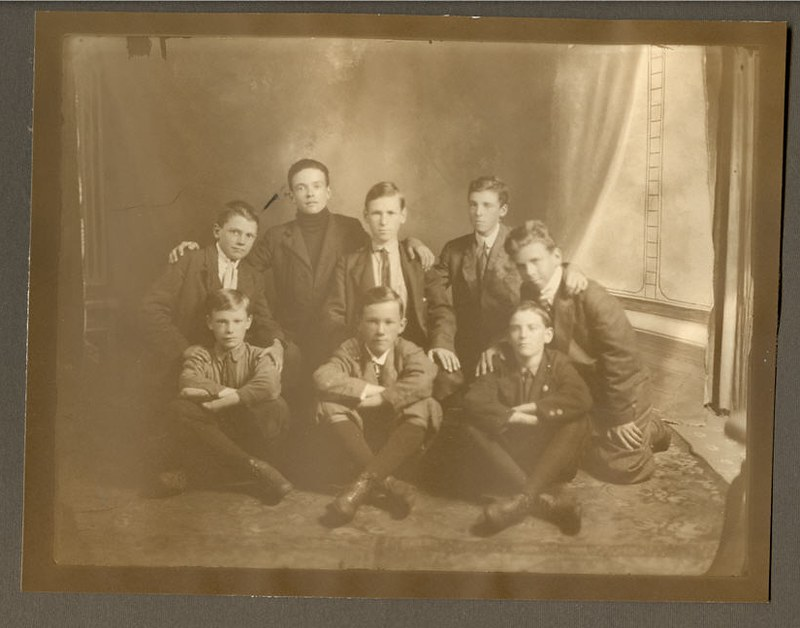

Jordan and his friends are at a friendly gathering. They are debating whether they’ll go on a hike to the summit of a mountain or swim under the sea to an underwater cave. You, the reader, will decide what adventure they should go on.
Click here to swim to an underwater cave
"Franklin 'C' Boys' Team" by City of Thunder Bay Archives is marked with Public Domain Mark 1.0  .
https://www.bensound.com/royalty-free-music/track/jazzy-frenchy-upbeat-funny
.
https://www.bensound.com/royalty-free-music/track/jazzy-frenchy-upbeat-funny